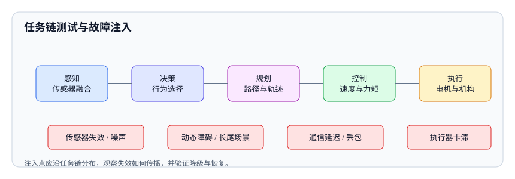

<script type="application/json" id="tb-manifest">
{
  "schema": "tb/1",
  "id": "L-002-002",
  "title": "任务链、长尾场景与故障注入",
  "module": "M02",
  "concepts": [
    "task-chain-fault-injection"
  ],
  "target_level": "L3",
  "minutes": 55,
  "objectives": [
    "能把任务链拆成可测试节点与接口",
    "能为长尾和降级场景设计故障注入",
    "能定义注入实验的观测指标与恢复判据"
  ],
  "prerequisites": [
    "test-design-techniques"
  ],
  "exercises": [
    "EX-009-01",
    "EX-009-02"
  ],
  "resources": [
    "R-29119-4",
    "R-ISO-8373"
  ],
  "objective_map": {
    "O1": [
      "EX-009-01"
    ],
    "O2": [
      "EX-009-02"
    ],
    "O3": [
      "EX-009-02"
    ]
  }
}
</script>
<article class="tb-lesson">
  <header>
    <p class="tb-eyebrow">M01 · 测试策略、设计与预言</p>
    <h1>任务链、长尾场景与故障注入</h1>
    <p><strong>学完你能：</strong>把机器人任务链拆成可测试节点，并为“转弯中行人横穿”设计含注入点、观测指标、降级预期和恢复判据的实验。</p>
  </header>
  <section class="tb-retrieval">
    <h2>开课前 3 分钟：先回忆</h2>
    <ol>
      <li>边界值测试取哪些点？</li>
      <li>状态迁移要覆盖哪些非法路径？</li>
    </ol>
    <details>
      <summary>参考答案</summary>
      <p>边界值取边界内外两侧；状态迁移要覆盖非法跳转、超时和异常恢复。</p>
    </details>
  </section>
  <aside>
    <p><strong>本课主读：</strong>R-29119-4《ISO/IEC/IEEE 29119-4:2021 测试技术》。重点看场景法和基于缺陷的测试设计，理解如何把真实失效转成可执行场景。</p>
  </aside>
  <section>
    <h2>一、每个模块都通过，整机却差点撞上</h2>
    <p>一个团队把感知、规划、控制三个模块都测了一遍：感知在标准数据集上准确率 98%，规划在仿真里能走出平滑路径，控制在台架上跟踪误差很小。但整机测试时，机器人在“转弯过程中遇到突然横穿的行人”这个场景下停在了错误位置，差点撞到货架。单独看每个模块都没有明显缺陷，问题出在任务链的时序和失效传播上。</p>
    <p>机器人不是单个算法的集合，而是一条从感知到执行的任务链。只测“正常输入、正常输出”，无法回答失效如何传播、系统能否降级、何时恢复。</p>
  </section>
  <figure>
    
    <figcaption>故障注入点应沿任务链分布，观察失效传播、降级行为和恢复能力。</figcaption>
  </figure>
  <section>
    <h2>二、任务链的五个节点</h2>
    <table>
      <thead>
        <tr><th>节点</th><th>输入</th><th>输出</th><th>典型失效</th></tr>
      </thead>
      <tbody>
        <tr><td>感知</td><td>图像、点云、IMU、里程计</td><td>障碍物、位姿、语义</td><td>漏检、误检、延迟、标定漂移</td></tr>
        <tr><td>决策</td><td>目标、地图、当前状态</td><td>行为选择（直行、绕行、停车）</td><td>行为抖动、优先级错误、死锁</td></tr>
        <tr><td>规划</td><td>行为、地图、动态障碍</td><td>路径、速度曲线</td><td>路径不可行、速度不连续、重新规划震荡</td></tr>
        <tr><td>控制</td><td>路径、速度、底盘状态</td><td>轮速、力矩、转向</td><td>跟踪误差、饱和、延迟补偿错误</td></tr>
        <tr><td>执行</td><td>控制指令</td><td>真实运动</td><td>卡滞、打滑、编码器跳变、制动延迟</td></tr>
      </tbody>
    </table>
    <p>拆任务链时要同时拆接口：消息格式、单位、坐标系、时间戳、超时和错误码。很多“模块都没问题”的故障，实际是接口假设不一致：规划输出的是车体坐标系，控制按世界坐标系解释；感知时间戳是采集时刻，融合按接收时刻对齐。</p>
  </section>
  <section>
    <h2>三、长尾场景从哪里来</h2>
    <p>长尾不是“想不出来的奇怪情况”，而是有来源的：现场日志、事故复盘、客服工单、仿真随机化、领域知识、标准条款。一个实用的做法是建立场景库，按维度组织：</p>
    <ul>
      <li><strong>动态障碍：</strong>突然横穿、遮挡后出现、多人并行、儿童/宠物、推车。</li>
      <li><strong>传感器失效：</strong>单目失效、点云缺失、反光/透明物体、镜头脏污、标定漂移。</li>
      <li><strong>通信降级：</strong>延迟、丢包、断连、时间同步丢失、带宽拥塞。</li>
      <li><strong>执行器异常：</strong>卡滞、力矩饱和、编码器跳变、制动延迟。</li>
      <li><strong>环境变化：</strong>光照、雨雾、地面材质、GPS 拒止、电磁干扰。</li>
      <li><strong>人为因素：</strong>误操作、急停、违规进入、遮挡安全传感器。</li>
    </ul>
    <p>场景库要版本化，并标注来源和风险等级。现场回流的新场景要进入回归集，否则同类问题还会再发生。</p>
  </section>
  <section>
    <h2>四、故障注入的三个层次</h2>
    <table>
      <thead>
        <tr><th>层次</th><th>做法</th><th>优点</th><th>局限</th></tr>
      </thead>
      <tbody>
        <tr><td>模型/仿真层</td><td>在仿真中生成极端场景、注入噪声和延迟</td><td>可控、可重复、成本低</td><td>保真度有限，可能漏掉真实物理效应</td></tr>
        <tr><td>接口/消息层</td><td>替换 topic 数据、注入延迟/丢包、篡改时间戳</td><td>接近真实软件栈，易自动化</td><td>无法验证传感器和执行的物理故障</td></tr>
        <tr><td>硬件/现场层</td><td>遮挡传感器、断开网络、制造负载、实车注入</td><td>真实验证降级和恢复</td><td>成本高、风险大、难重复</td></tr>
      </tbody>
    </table>
    <p>好的注入策略是分层组合：先用仿真和接口层快速覆盖大量组合，再把高风险场景放到硬件和现场层验证。不要把所有注入都推到实机，也不要用仿真结果替代现场安全验证。</p>
    <pre data-tb-block="code" data-language="yaml"><code># 一个注入实验的配置：注入点、方式、持续时间、观测与恢复判据都要写死
experiment: obstacle_jump_on_turn
inject_at: perception/obstacles        # 接口层，不动感知内部
inject:
  kind: trajectory_jump                # 位置突变，模拟遮挡后目标重捕获
  magnitude_m: 2.0
  duration_ms: 300
  start_condition: {topic: "cmd_vel", lateral_accel_gt: 0.0}
observe:
  - {name: stop_distance_m, sensor: chassis/odom}
  - {name: max_decel_mps2, sensor: chassis/imu}
  - {name: recovery_time_ms, sensor: planner/status}
expect_degraded: stop_and_wait         # 允许停车，不允许绕行
pass_criteria:
  stop_distance_m: "<= 0.5"
  recovery_time_ms: "<= 3000"
  no_new_alarm: true
replay: {bag: field_20261012, seed: 20261104}</code></pre>
    <p>把这段配置和 rosbag 一起归档，实验才可复现。只写“注入 300 ms 延迟”而不写种子与回放，第二次跑出来的就不是同一个实验。</p>
  </section>
  <section>
    <h2>五、一次注入实验应该包含什么</h2>
    <table>
      <thead>
        <tr><th>字段</th><th>说明</th><th>示例</th></tr>
      </thead>
      <tbody>
        <tr><td>假设</td><td>你预期系统会怎么反应</td><td>障碍物横穿时应在 0.5 m 内停车并保持 3 s</td></tr>
        <tr><td>注入点</td><td>在任务链哪个节点注入</td><td>感知输出的障碍物轨迹</td></tr>
        <tr><td>注入方式</td><td>延迟、丢包、篡改、替换、遮挡</td><td>把障碍物位置突变 2 m，持续 300 ms</td></tr>
        <tr><td>观测指标</td><td>看哪些量</td><td>停车距离、减速度、恢复时间、告警</td></tr>
        <tr><td>预期降级</td><td>允许的行为</td><td>停车并等待，不绕行</td></tr>
        <tr><td>恢复判据</td><td>什么算恢复</td><td>障碍物离开后 5 s 内按原路径继续</td></tr>
      </tbody>
    </table>
    <p>没有恢复判据的注入，只能证明“坏了”，不能证明“能恢复”。而现场最需要的恰恰是恢复能力。</p>
  </section>
  <section>
    <h2>六、实例：转弯中行人横穿</h2>
    <p>场景：机器人在路口右转，速度 1.2 m/s，行人从右侧突然进入 1.5 m 范围。用上面的模板设计实验：</p>
    <ul>
      <li><strong>假设：</strong>系统应在 0.5 m 内停车，保持安全距离，行人离开后 5 s 内恢复。</li>
      <li><strong>注入点：</strong>感知障碍物列表；同时在规划层注入一次延迟，模拟融合耗时。</li>
      <li><strong>注入方式：</strong>行人位置从视野外突变为 1.5 m，持续 2 s；再注入 100 ms 感知延迟。</li>
      <li><strong>观测：</strong>最小距离、减速度、停车位置、是否越过停止线、恢复时间、告警日志。</li>
      <li><strong>预期降级：</strong>停车，不尝试绕行；若感知置信度低，进入安全停车并请求远程确认。</li>
      <li><strong>恢复：</strong>行人离开且感知连续 3 帧确认后，重新规划并恢复。</li>
    </ul>
    <p>把时间线拆开看更清楚：t=0 行人进入视野，t=40 ms 感知输出，t=80 ms 规划重算，t=120 ms 控制减速，t=200 ms 停止。单独看每一步都不慢，但叠加起来，再加上转弯时的视野遮挡和底盘响应，最终停车距离可能超出预期。如果 10 次里有一次越过停止线，这不是“偶发”，而是高风险缺陷，需要追查时序和感知延迟。</p>
  </section>
  <section>
    <h2>七、失效传播与降级设计</h2>
    <p>注入之后要看失效怎么传播：感知误检是否导致规划频繁重算，重算是否导致控制震荡，震荡是否触发急停，急停后能否恢复。很多系统不是被单点故障击倒，而是被连锁反应拖垮。</p>
    <p>降级设计要回答三个问题：失效时进入什么状态？谁来决定降级？如何告知用户和运维？例如传感器失效时，是限速、停车、退回安全区还是请求远程接管；降级后是否还能完成当前任务；恢复是否需要人工确认。</p>
  </section>
  <section>
    <h2>八、常见误区</h2>
    <ul>
      <li><strong>只注入单点故障。</strong>真实问题常是多个小故障叠加。</li>
      <li><strong>没有恢复判据。</strong>只验证“停了”，不验证“能不能继续”。</li>
      <li><strong>只在仿真里注入。</strong>高风险场景缺少实机证据。</li>
      <li><strong>注入结果不记录环境。</strong>无法复现，也无法判断是否偶发。</li>
      <li><strong>把降级当失败。</strong>降级是设计的一部分，关键是有没有按预期降级。</li>
      <li><strong>场景库不更新。</strong>现场新问题不回流，同类缺陷反复出现。</li>
    </ul>
  </section>
  <section>
    <h2>九、检查清单</h2>
    <ul>
      <li>任务链节点和接口是否都列出了输入、输出和失效模式？</li>
      <li>长尾场景是否覆盖动态障碍、传感器、通信、执行器和环境？</li>
      <li>注入是否分层组合，而不是只做一种？</li>
      <li>每次注入是否有假设、观测指标、预期降级和恢复判据？</li>
      <li>是否观察了失效传播和连锁反应？</li>
      <li>注入结果是否记录环境、版本和次数？</li>
      <li>新场景是否回流到场景库和回归集？</li>
    </ul>
  </section>
  <section>
    <h2>十、失效传播时间线</h2>
    <p>把“转弯中行人横穿”按时间线拆开，能看清失效是怎么叠加的：</p>
    <table>
      <thead>
        <tr><th>时刻</th><th>事件</th><th>系统状态</th><th>如果这一步失败</th></tr>
      </thead>
      <tbody>
        <tr><td>t=0 ms</td><td>行人从右侧进入视野</td><td>感知开始处理</td><td>漏检：后续全部失效</td></tr>
        <tr><td>t=40 ms</td><td>感知输出障碍物</td><td>障碍物列表更新</td><td>延迟：规划仍按旧地图走</td></tr>
        <tr><td>t=80 ms</td><td>规划收到障碍物，开始重算</td><td>路径切换</td><td>重算震荡：速度反复变化</td></tr>
        <tr><td>t=120 ms</td><td>控制收到新速度</td><td>底盘减速</td><td>执行延迟：停车距离变长</td></tr>
        <tr><td>t=200 ms</td><td>车辆停止</td><td>安全距离保持</td><td>未停：碰撞风险</td></tr>
      </tbody>
    </table>
    <p>单独看每一步都不慢：感知 40 ms、规划 40 ms、控制 40 ms。但叠加起来，再加上转弯时的视野遮挡和底盘响应，最终停车距离可能超出预期。故障注入要做的就是在这个时间线上选择注入点，观察哪一段被放大。</p>
    <p>另一个常见问题是“恢复”没有设计。行人离开后，系统是立即恢复、延时恢复，还是需要人工确认？如果立即恢复，可能在人还没完全离开时又启动；如果永远不恢复，任务会卡死。恢复判据必须和降级策略一起设计。</p>
  </section>
  <section>
    <h2>十一、评审与面试追问</h2>
    <ul>
      <li><strong>问：故障注入和混沌工程有什么区别？</strong>答：故障注入是更广的概念，混沌工程强调在生产环境做受控实验；机器人测试通常从仿真和接口层开始，高风险场景再上实机。</li>
      <li><strong>问：注入延迟多少合适？</strong>答：基于现场日志和系统时序预算确定，不要拍脑袋；先从 P95、P99 和超时阈值附近开始。</li>
      <li><strong>问：怎么判断是降级还是失败？</strong>答：看是否按设计进入预期状态、是否保持安全、是否能恢复。只要符合设计，降级不是失败。</li>
      <li><strong>问：仿真注入能替代实机吗？</strong>答：不能完全替代。仿真适合大量组合和早期发现，实机用于验证物理效应和高风险场景。</li>
      <li><strong>问：注入结果不稳定怎么办？</strong>答：记录环境、版本、次数和失败条件；用统计方法判断是偶发还是系统性问题，不要用一次结果下结论。</li>
    </ul>
  </section>
  <div data-tb-exercise="EX-009-01"></div>
  <div data-tb-exercise="EX-009-02"></div>
  <section>
    <h2>十二、故障注入检查表</h2>
    <p>注入实验也要有停止条件：高风险节点全部覆盖、每个注入点有正常/降级/恢复三类结果、新注入不再产生新的失效模式。满足这三条再停，而不是“感觉差不多了”。</p>
    <ul>
      <li>注入点是否在任务链上标清楚，是否覆盖感知、决策、规划、控制、执行？</li>
      <li>注入方式是否可重复，是否有参数和持续时间记录？</li>
      <li>是否有明确的预期降级行为，而不是“看看会怎样”？</li>
      <li>是否观测失效传播，而不只是最终结果？</li>
      <li>是否有恢复判据和恢复时间要求？</li>
      <li>是否记录了环境、版本、次数和失败条件？</li>
      <li>高风险注入是否在实机验证过？</li>
      <li>新发现的失效模式是否回流到场景库和回归集？</li>
    </ul>
  </section>
  <aside class="tb-callout" data-tone="warn">
    <p><strong>常见误区：</strong>每个模块单测通过，整机任务链就没问题。接口不变不代表时序与降级行为不变，链路级验证不能省。</p>
  </aside>
  <section>
    <h2>小结</h2>
    <p>任务链测试的核心不是把每个模块测一遍，而是把节点、接口、时序和失效传播放在一条链上看。长尾场景要来自现场、日志和领域知识，故障注入要有假设、观测、预期降级和恢复判据。真正安全的系统不是从不失效，而是失效时能按设计降级，并且能恢复。</p>
  </section>
</article>
